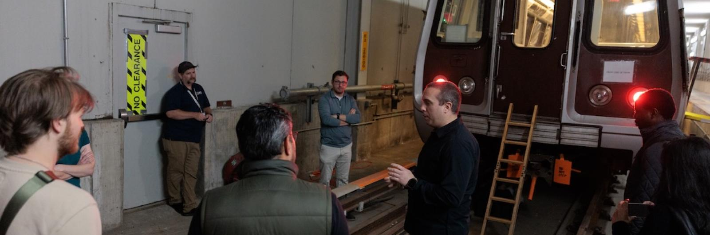
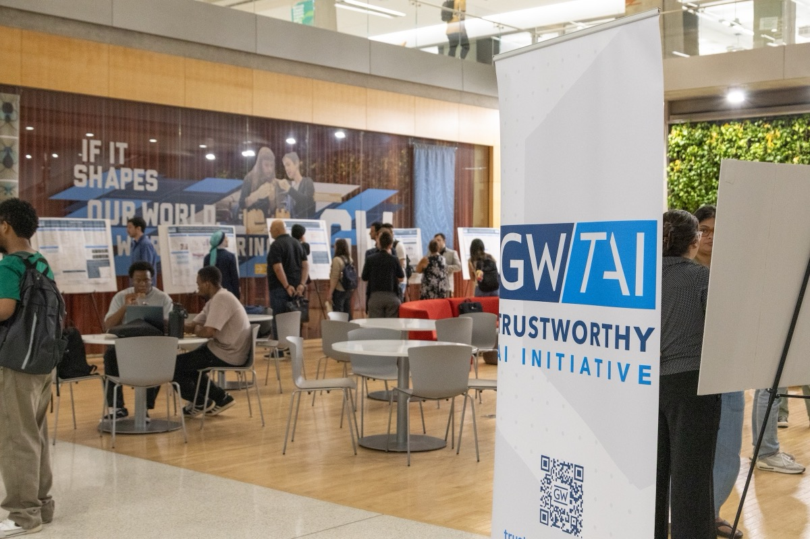

About the program
The TAI Fellow Program is for PhD students at GW, in any discipline, who want to join a community of scholars interested in trustworthy AI.
We welcome students who come to trustworthy AI from a technical, social, governance, legal, medical, artistic, or humanities perspective.
What fellows do
Fellows take part in three activities.
-
Fall
Trustworthy AI course
Take the Trustworthy AI course (CSCI 6510 / EMSE 6992).
Course website -
Spring
PhD seminar
Join the zero-credit PhD seminar (EMSE 6901) for a deep dive into trustworthy AI topics.
-
Summer
Summer incubator
Join the Trustworthy AI summer incubator, usually four weeks around June. Work with each other, with experts, and with industry collaborators to prototype or explore how AI affects something in the real world right now.
Past site visits
Fellows can also attend other GW Trustworthy AI activities, such as talks and workshops. See the GW TAI events page.
AI in the wild
Past years have included site visits to groups actively developing and using AI in real applications:
- Medical Imaging and Robotics Laboratory
- WMATA/DC Metro control center
- Whole Foods “Just Walk Out” store in Northwest DC
- GW robotics and drone labs
- Virginia Task Force 1 search-and-rescue training site
- MITRE autonomous vehicle and air traffic control labs


More about the incubator
- GW PhD Fellows Apply AI to Real-World Problems (GW Trustworthy AI Initiative, 2026)
- Summer Incubator Challenges PhD Fellows to Address Real-World Interdisciplinary Problems (GW Trustworthy AI Initiative, 2025)
- Building Interdisciplinarity in Engineering Doctoral Education: Insights from DTAIS Summer Incubator (conference paper, 2024)
- Summer Boot Camp Seeks to Kickstart New Research on ‘Trustworthy’ Artificial Intelligence (GW Today, 2022)
Contact
For more information, email Robert Pless at pless@gwu.edu.